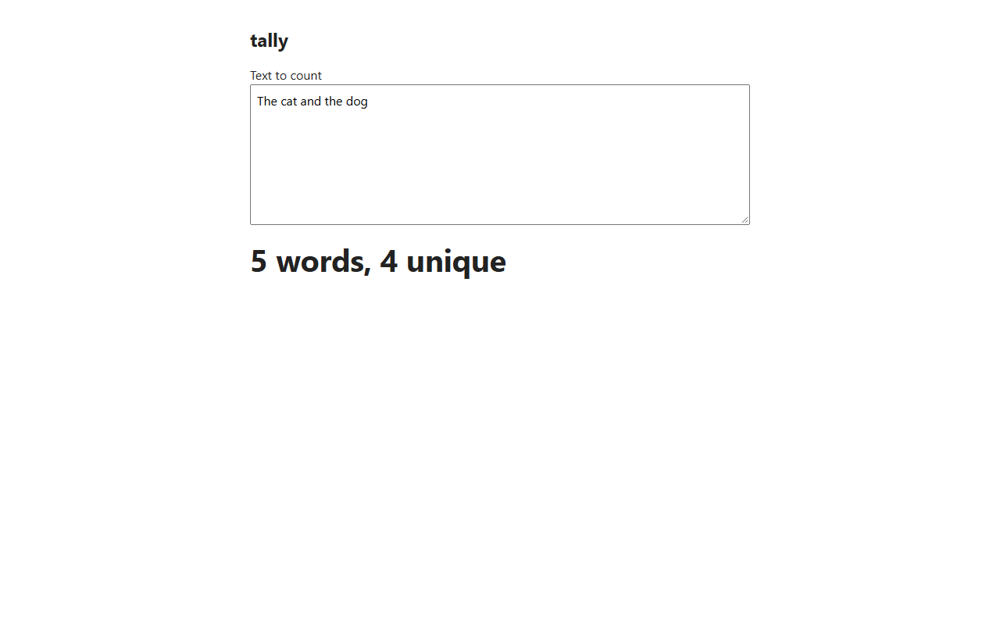
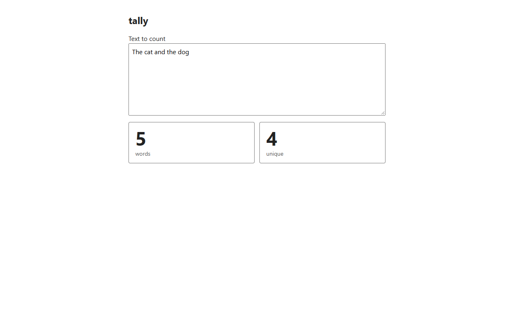
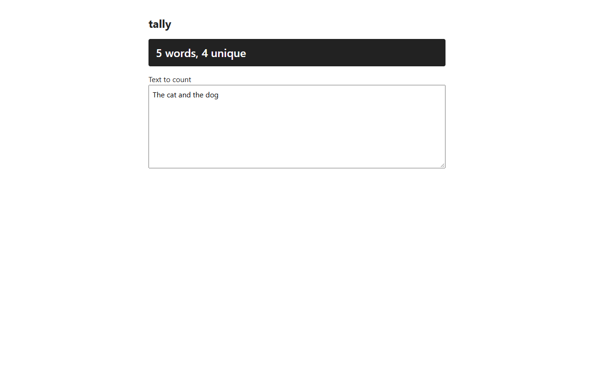
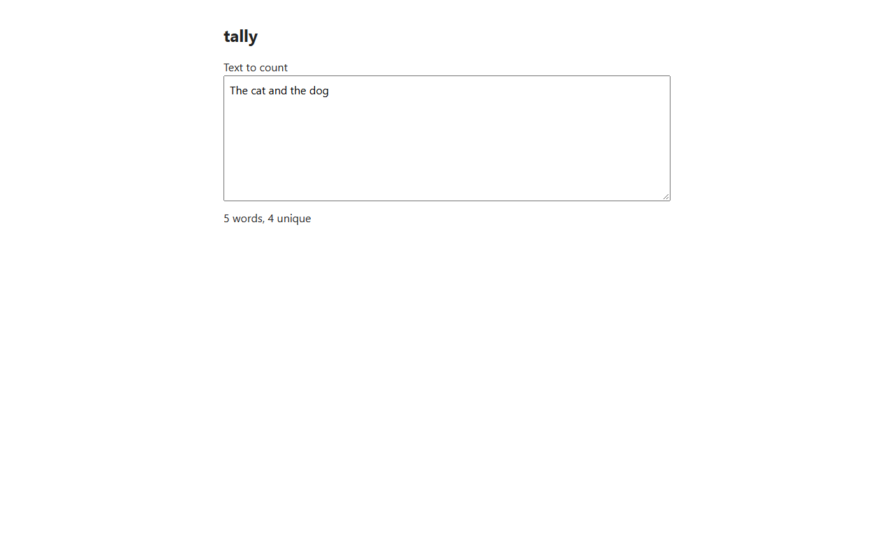
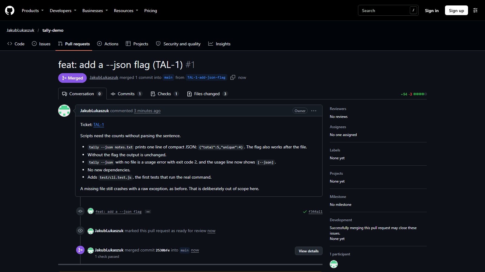

A skill pack for Claude Code and Codex
Your coding agent, with a process.
Every change gets a plan you approve, real tests, independent review and your own manual test. Then a written record, in notes that stay yours.
The loop
Eight stages. Four of them wait for you.
The same path for every change, on every repo. Pick a stage to see what happens there.
Proof, not promises
What the loop caught on a demo repo.
Small changes to a small project, and real findings from the reviewers that came after the agent that wrote the code.
4test gaps found in a three-line feature, after its author had called it ready
0pxof layout jump on a slow load, down from 75px, once review reproduced it
8independent reviewers in a full round, one lens each, none seeing the others' findings
Mockups
See it on your real app before anything ships.
The agent tries options on the running page, screenshots each one, and puts the code back exactly as it was. You pick. Your pick goes through the whole loop.






Ticket to merge
From Jira to a merged PR, with a paper trail.
- Read the ticket. Saved unchanged as the brief, so the plan answers what was asked.
- Open a draft PR. Linked to the ticket, in your repo's commit style.
- Watch CI. Red goes back through the loop.
- You merge. The agent never does. It finds the merge and archives the work.
Fits how you already work.
Skills written for each repoIt scans your code and writes how to build, test, review and commit there. Each rule ties to a file it found.
63 settings, 8 presetsWho commits, which browser, which model tier. Settings change how a stage runs, never whether it runs.
Work that survives the sessionPlans, reviews and a dated journal live in a notes repo that belongs to you.
Honest about its limitsThe rules are instructions, not locks. Read what it can and cannot promise.